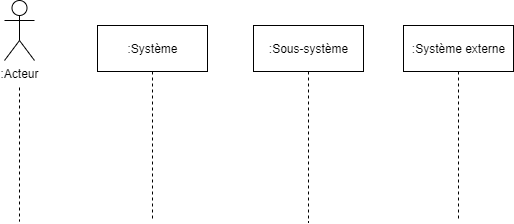
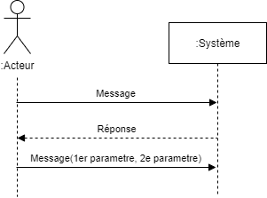
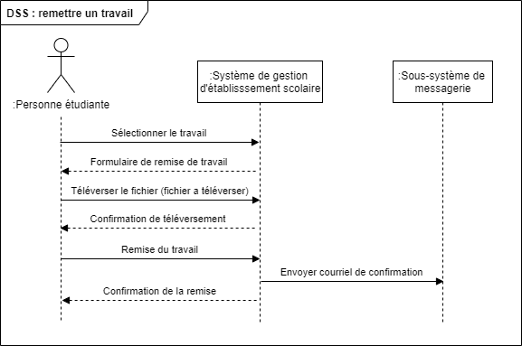
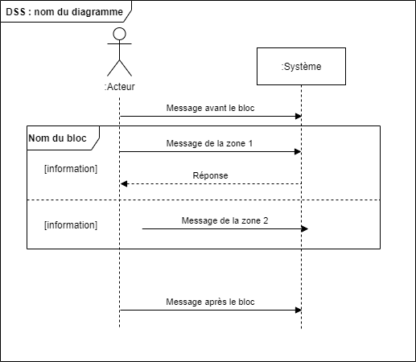
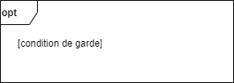
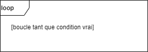
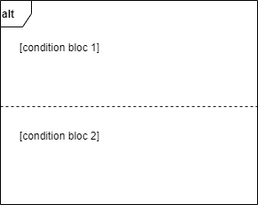
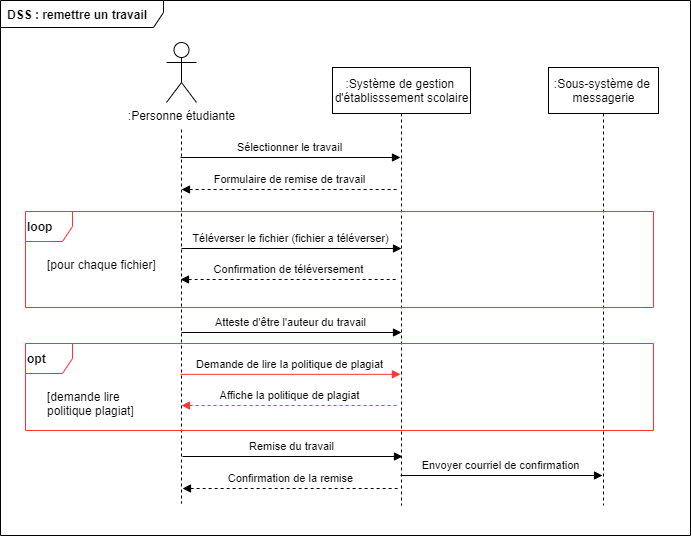
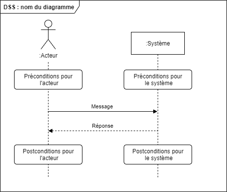
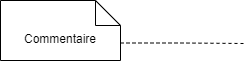

Diagrammes de séquence système
Étape du développement
Analyse
Standard de notation
UML 2.5
Nom anglais
System sequence diagram, Sequence diagram 1
Dans la description détaillée des cas d’utilisation, on retrouve une description textuelle des messages entre les acteurs, le système et les sous-systèmes. Il peut être utile de modéliser graphiquement le séquençage de ces opérations afin d’obtenir une meilleure vue d’ensemble sur la circulation des informations entre les acteurs et le système. C’est ce que l’on appelle les diagrammes de séquence système (DSS).
Important !
Il faut se rappeler que le but d’un DSS n’est pas de remplacer la description textuelle d’un CU, mais bien de faciliter la compréhension du CU en fournissant une vue d’ensemble des opérations clés.
Dans cette modélisation, on considère que le système agit selon un principe appelé la boîte noire. On représente donc uniquement les commandes passées aux systèmes, les données entrantes et les messages retournés par le système. Cette modélisation est souvent très proche de la description textuelle du cas, mais permet d’obtenir une vue d’ensemble des messages du système.
La distinction entre diagramme de séquence et diagramme de séquence système
Il existe deux situations où les diagrammes de séquence peuvent être utilisés, et dans les deux cas, la notation est sensiblement la même. Afin de différencier les deux types de diagrammes, l’appellation diagramme de séquence fait référence au diagramme qui présente le séquençage des appels entre des objets du système.
Le diagramme de séquence système présente le séquençage des appels entre les acteurs et le système. C’est ce deuxième type qui est présenté dans cette section.
Entités actrices, système et sous-système
Les entités qui participent à la réalisation des cas d’utilisation sont représentées sous forme d’un trait pointillé auquel les messages qu’ils émettent ou reçoivent viennent s’accrocher. Les systèmes et sous-systèmes sont identifiés par une boîte, alors que les entités actrices sont identifiés par des bonshommes allumettes. Sous chaque élément est tracé une ligne appelée « ligne d’instance » (on utilise souvent le terme « ligne de vie », même si ce dernier est incorrect) en pointillé de laquelle provient ou s’y termine les messages qui impliquent l’élément. Le nom de l’entité est précédé du symbole deux points « : ».
On présente les éléments dans l’ordre suivant sur un DSS :
- À gauche complètement on retrouve l’entité actrice principale du scénario représenté ;
- Immédiatement à la droite de l’entité actrice principale on retourne le système ;
- On retrouve ensuite, en ordre d’appel, de la gauche vers la droite, les sous-systèmes et les entités actrices secondaires.


Messages
Différents messages peuvent circuler entre les acteurs et les systèmes. Les messages des acteurs vers le système prennent la forme d’une flèche pleine sur laquelle le nom du message est écrit. Les réponses du système vers les acteurs prennent la forme d’une flèche pointillée avec la ou les valeurs retour inscrites sur la flèche. Les messages sont nommés avec une terminologie informelle (qui n’est pas liée à un langage de programmation).
Si le message comporte des paramètres, ceux-ci sont indiqués entre parenthèses, toujours en utilisant une terminologie informelle. S’il y a plusieurs paramètres, ils sont séparés par une virgule. Si un message ne donne pas lieu à une réponse, la flèche de réponse est omise.


Modélisation du cas d'utilisation « Remettre une évaluation »
Reprenons la situation définie à l’exemple ... où l’on modélise un système de gestion d’une école semblable au système Omnivox. Le cas modélisé est celui où une personne étudiante remet une évaluation.
Nom du CU : Remettre une évaluation
Entité actrice principale : personne étudiante
Préconditions :
- La personne étudiante est connectée au système.
- La personne étudiante a été assignée à au moins un travail.
- La personne étudiante possède un document qu’elle veut remettre.
Postconditions :
- Un fichier a bien été téléversé dans le système.
- Un courriel de confirmation a été envoyé à la personne étudiante.
Scénario principal
- La personne étudiante sélectionne le travail qu’elle souhaite remettre parmi les travaux qui lui sont assignés.
- Le système affiche un formulaire de remise de travail.
- La personne étudiante sélectionne le fichier à remettre.
- Le système confirme le téléversement complet du fichier.
- La personne confirme la remise du travail.
- Le système informe le sous-système de messagerie d’envoyer une confirmation de remise à la personne étudiante.
- Le système confirme l’enregistrement de la remise.
Voici le Diagramme de séquence (DSS) relatif à ce cas d’utilisation.


Blocs
On peut tenir compte des scénarios d’extension et des opérations conditionnelles ou répétées à l’aide des blocs. Il existe 3 types de blocs : optionnel, traitement répétitif et alternatif. Chaque bloc prend la forme d’un encadré avec une vignette d’information en haut à gauche qui renseigne sur son type. Chaque bloc peut être accompagné d’une paire de crochets pour indiquer des informations spécifiques à la situation.
Les messages qui sont envoyés de façon conditionnelle ou répétée sont dans le bloc. Si le bloc contient plusieurs zones, celles-ci sont séparées par une ligne pointillée.


- Le bloc optionnel permet de gérer la présence de conditions de garde dans le code. Le bloc est composé d’une seule zone avec une condition de garde. Le code dans le bloc est exécuté si la condition de garde est vraie.
- Le bloc de répétition permet de gérer des opérations répétées tant qu’une condition est vraie. Le bloc contient une seule zone d’instructions à répéter.
- Le bloc alternatif permet de gérer plusieurs conditions quelconques et exclusives. Seul le code dans le bloc où la condition est vérifiée sera exécuté.






Modélisation du CU « Remettre une évaluation » avec les blocs de traitement
Reprenons l’exemple ... et bonifions la description du cas d’utilisation. Le cas modélisé est celui où une personne étudiante remet une évaluation. Les étapes ajoutées sont inscrites en rouge.
Nom du CU : Remettre une évaluation
Entité actrice principale : personne étudiante
Préconditions :
- La personne étudiante est connectée au système.
- La personne étudiante a été assignée à au moins un travail.
- La personne étudiante possède un document qu’elle veut remettre.
Postconditions :
- Un fichier a bien été téléversé dans le système.
- Un courriel de confirmation a été envoyé à la personne étudiante.
Scénario principal
- La personne étudiante sélectionne le travail qu’elle souhaite remettre parmi les travaux qui lui sont assignés.
- Le système affiche un formulaire de remise de travail.
- La personne étudiante sélectionne le fichier à remettre.
- Le système confirme le téléversement complet du fichier.
- La personne étudiante répète l’étape 3 pour chaque fichier supplémentaire à remettre.
- La personne étudiante coche la case qui atteste qu’elle a produit elle-même le travail et qu’elle a cité les sources utilisées adéquatement.
- La personne confirme la remise du travail.
- Le système informe le sous-système de messagerie d’envoyer une confirmation de remise à la personne étudiante.
- Le système confirme l’enregistrement de la remise.
Scénario d’extension :
6a La personne étudiante souhaite lire la politique de plagiat.
- La personne étudiante clique sur le lien pour lire la politique de plagiat.
- Le système affiche la politique de plagiat.
Voici le DSS relatif à ce cas d’utilisation.


Préconditions et postconditions
On peut représenter les préconditions et les postconditions sur un DSS avec une boîte aux coins arrondis située sur la ligne d’instance de l’entité à laquelle la condition s’applique. La présence des préconditions et des postconditions est toutefois optionnelle. Il faut éviter de surcharger le diagramme, donc elles sont souvent omises lorsqu’elles sont nombreuses.


Commentaires
Pour apporter des précisions supplémentaires sur le diagramme, on peut utiliser des commentaires. Ceux-ci prennent la forme de rectangle avec un coin replié. Une ligne pointillée pointe sur l’élément du diagramme auquel le commentaire s’applique. Si le commentaire ne vise pas un élément particulier, la ligne est omise. Il est important de limiter les commentaires afin de ne pas saturer le diagramme.


-
Il existe aussi un type de diagramme appelé diagramme de séquence qui est semblable, mais pas identique au diagramme de séquence système. Certaines sources ne font pas la distinction entre les deux types de diagramme. ↩